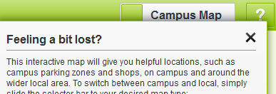

Welcome

The Help button
A number of sections in this app feature a help button, like this one, in the top right hand corner of the page;

Pressing this button will reveal a pop-up box providing additional help for the current page;
The information provided should be enough to enable you to use all of the features and get the most from your app, however if you have any further questions, comments or feedback then navigate to the Help! section using the Quick Links menu and get in touch!
Welcome to the University of St Mark & St John's Induction App!
Induction is the process of introducing you to the University, its staff and its environment. During 'Induction Week' you'll complete your registration onto your programme of study and prepare for the academic year ahead.
This app is designed to support you before, during and after the induction process by providing you with a range of information to help make sure everything goes as smoothly as possible. We hope you find it useful.
To access the quick menu, simply press the icon on the top left hand corner of the screen and select the section that you would like to visit from the list: